The Inn
TomTom opens the Inn when you unlock the 5th product in either forge. There you recruit adventurers, equip them with what you forged and send them on expeditions for coins, experience, Runes, Amulets and Bastion materials.
Adventurers
- You start with 2 beds. Rooms cost hours of income (0.5 h, 2 h, 6 h, 12 h, 24 h, 48 h) and the last ones, Runes (50, 100, 150, 250; the last two only with the Abyss open).
- Recruiting costs 10 minutes of income. Candidates refresh every 4 h (less with the Bastion Barracks).
- Going from level N to the next takes 20 × N experience. The cap is Lv 10; heroes and legends who complete their quest reach Lv 20.
- An adventurer's power comes from level and gear. Each class has favorite gear (★) that performs better.
- Hero and legend abilities grow with level: 50% at Lv 1 and 100% at Lv 10.
Regions
| Region | Power per adventurer | Favored class | Reward | XP | Unlocks with |
|---|---|---|---|---|---|
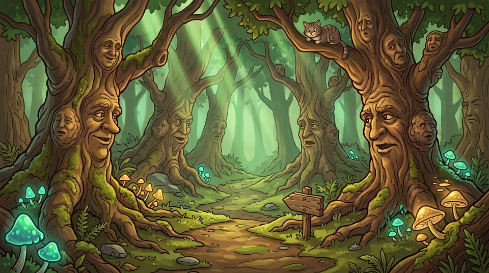 Whispering Woods | 4 | Rogue | ×1 | ×1 | from the start |
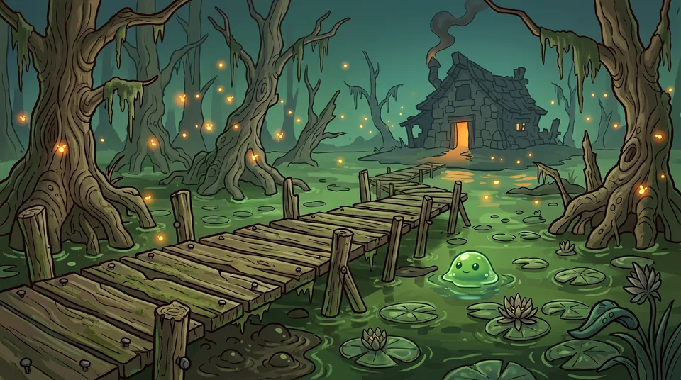 Grogg's Swamp | 10 | Mage | ×1.25 | ×1 | 10 wins |
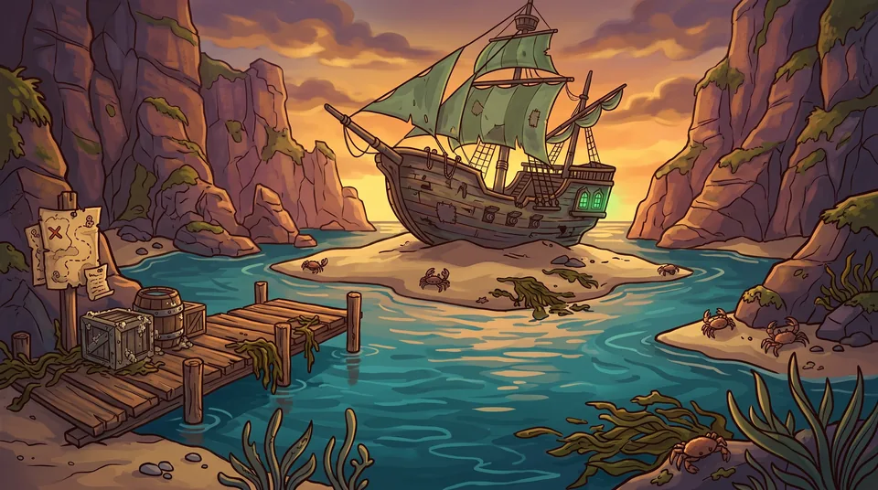 Green Tongue Coast | 18 | Warrior | ×1.5 | ×1 | an adventurer at Lv 4 |
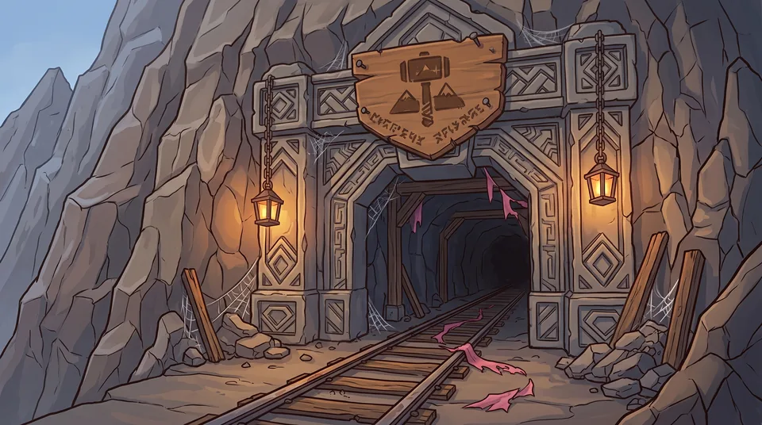 Malamar's Mines | 28 | Cleric | ×1.75 | ×1 | an adventurer at Lv 6 |
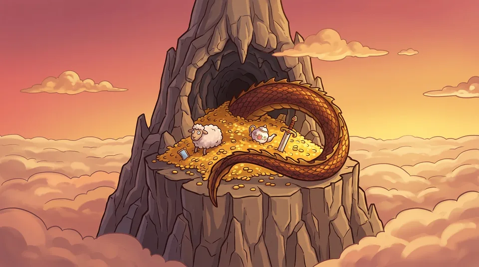 Doña Ramona's Peak | 40 | Warrior + Cleric | ×2 | ×1 | an adventurer at Lv 8 |
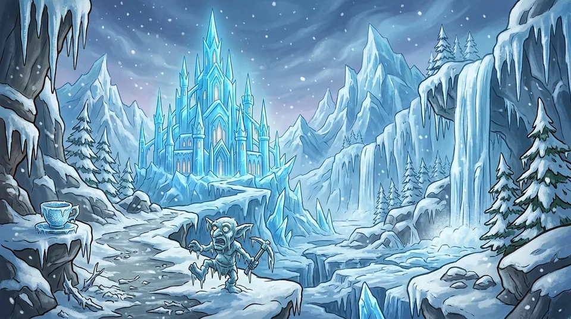 Michumi's Glacier | 50 | Mage | ×2.25 | ×1.5 | an adventurer at Lv 11 |
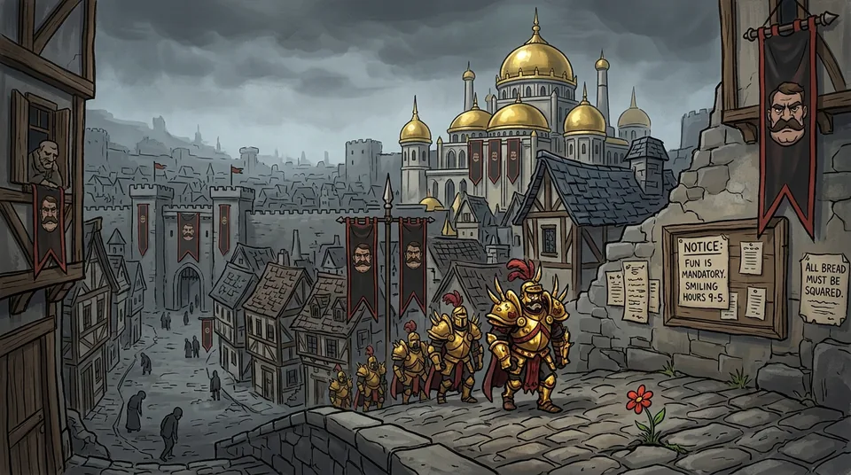 Argenen | 62 | Rogue | ×2.5 | ×2 | an adventurer at Lv 14 |
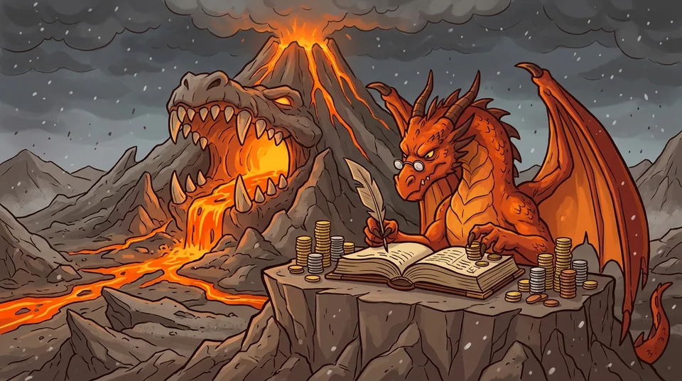 Ashen Maw | 75 | Warrior + Mage | ×2.75 | ×2.5 | an adventurer at Lv 17 |
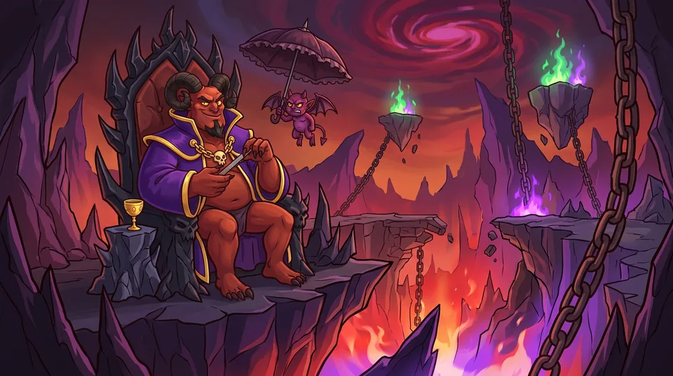 The Abyss | 110 | Cleric | ×3.5 | ×3 | an adventurer at Lv 20 |
Durations
| Type | Duration | Party | Coins | XP | Runes | Amulet |
|---|---|---|---|---|---|---|
| Short | 30 min | 1–2 | 0.3333333333333333 h of income | 5 | — | — |
| Medium | 2 h | 2–3 | 1.5 h of income | 20 | 30% → 1 | 5% |
| Long | 4 h | 3–4 | 3 h of income | 40 | 50% → 1 | 12% |
| Epic | 8 h | 4 | 6 h of income | 80 | 100% → 2 | 25% |
| Abyss | 12 h | 4 | 9 h of income | 100 | 100% → 4 | 50% |
Coins and experience are multiplied by the region's. A failure gives half the experience.
Success chance
- With exactly enough power (party power = region power × adventurers), the base chance is 60% (Forest 80%, Swamp 70%). It scales with the power ratio.
- Bonuses: favored class (up to +20%, by how much of the party has it), abilities, Owl Amulet, legends and combos. All bonuses together add at most +25%.
- Cap: 95% (50% in the Abyss).
- Resounding Success: 10% of wins (more with Clover, Varis and Xerth; never with Carrlos). Double coins and double Rune and Amulet chance.
- Failure: they collect a quarter of the coins and come back injured.
Injuries and the board
- An injured adventurer takes as long as the expedition lasted (at least 1 h). Heal with a video (5 a day, 8 with the Pass) or with Runes. Enrique, the Phoenix and the Hospital shorten it, by half at most (50%).
- The board has 3 expeditions; a new one appears 15 min after you send one (or right away, with Runes). Swap one with a video (3 a day) or 5 Runes.
- Legend rumors (golden expedition, from the Coast on): 4% per new expedition, at least 48 h apart, guaranteed after 40 without one. They are 1.25× harder. Win and the legend joins at Lv 5.
- Quests: when a hero or legend reaches Lv 10, their personal quest appears (power 45, they must go). Win it and their title changes and they can level up to Lv 20.
Amulets
Found on expeditions. They are permanent (survive the Guild) and level up to 5.
| Amulet | Effect | At level 5 |
|---|---|---|
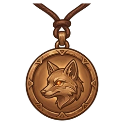 Fox Amulet Always knows where the money is. | +5% Crowns (5% per level) | 25% |
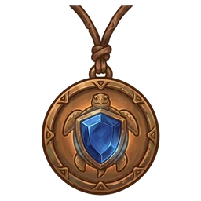 Turtle Amulet Slow, but never short a shield. | +5% Shields (5% per level) | 25% |
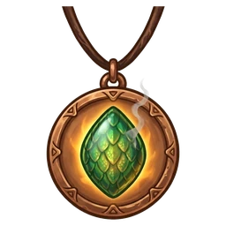 Ramón's Scale Ramón says it fell off. Don't believe him. | +2% to everything (2% per level) | 10% |
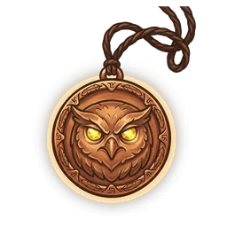 Owl Amulet Sees everything. Judges everything. | +3% expedition success (3% per level) | 15% |
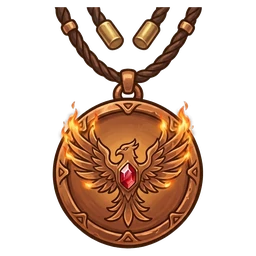 Phoenix Amulet Burns a little when you put it on. It's all that's left of the phoenix: the rest went into the stew. | Injuries heal 15% faster (15% per level) | 75% |
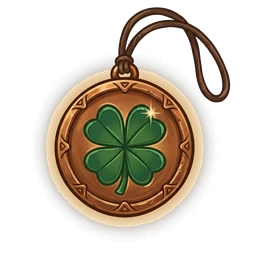 Clover Amulet The fifth four-leaf clover you found. | +2% Resounding success chance (2% per level) | 10% |
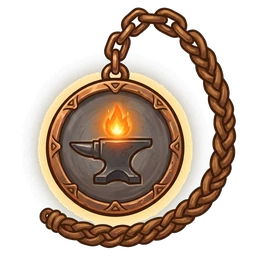 Anvil Amulet Heavy. Very heavy. | Equipping costs 10% less (10% per level) | 50% |
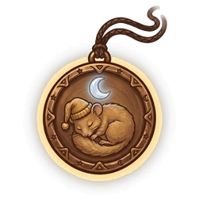 Dormouse Amulet Sleeps for you. | +0.5 h offline cap (30 min per level) | +2.5 h |